PDoomVideo / 效果 · 准备 · 原理 · 场景 · 意义
准备素材与风格，
让 AI 编排，让程序画成视频。
01 它能产生什么效果？
下方均为实际代码渲染，三个新场景共用同一套动作。

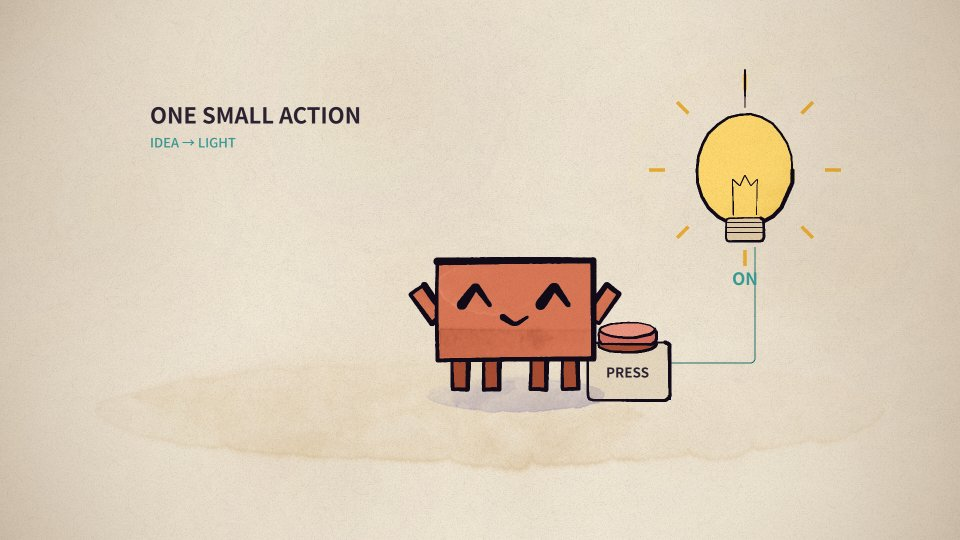
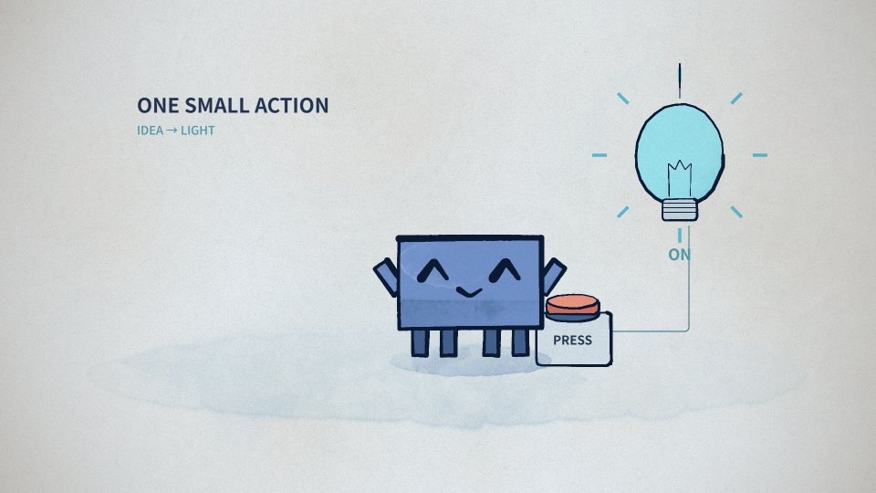
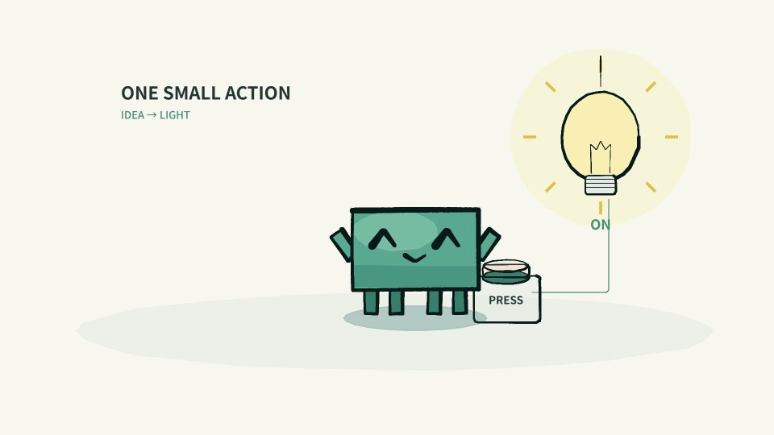
上游作品规格 156.6 秒 · 9 章 · 1920×1080 · 默认 24 FPS
本地新增样例 6 秒 · 12 FPS · 72 帧 / 风格 · 3 种风格 · 无声 MP4
02 给 AI 准备什么？
先把角色与世界变成明确、可调用、可检查的资产。

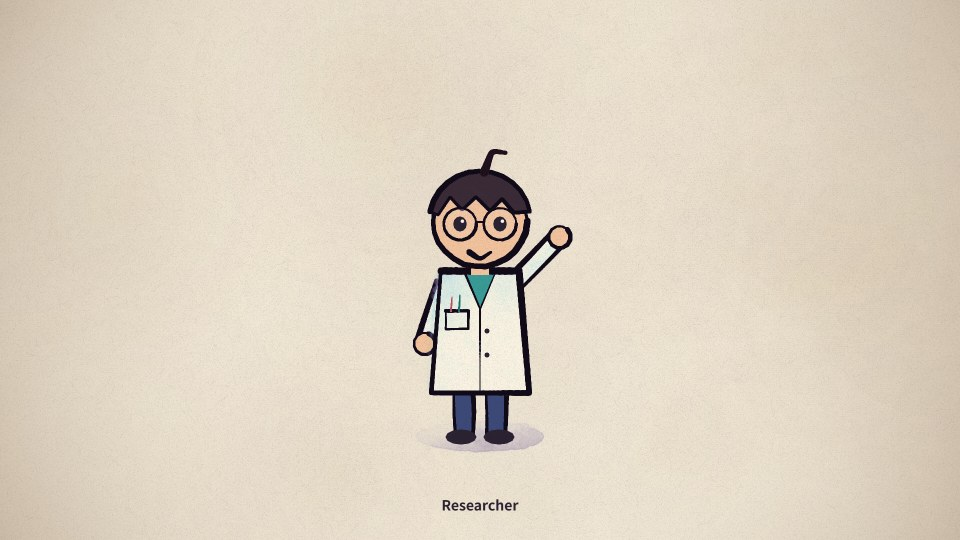
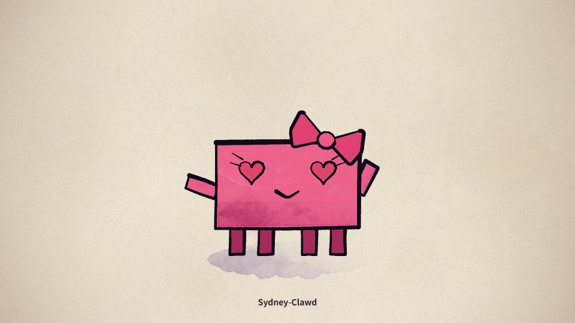
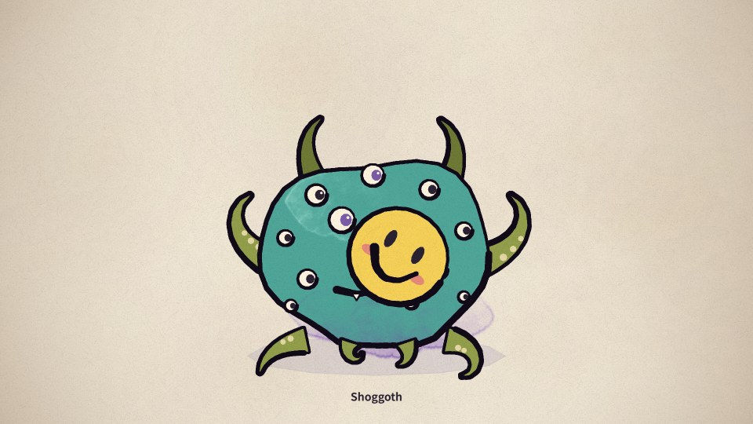
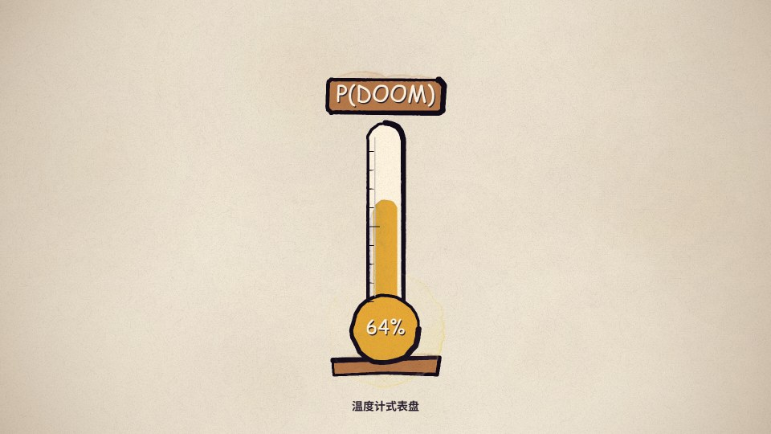
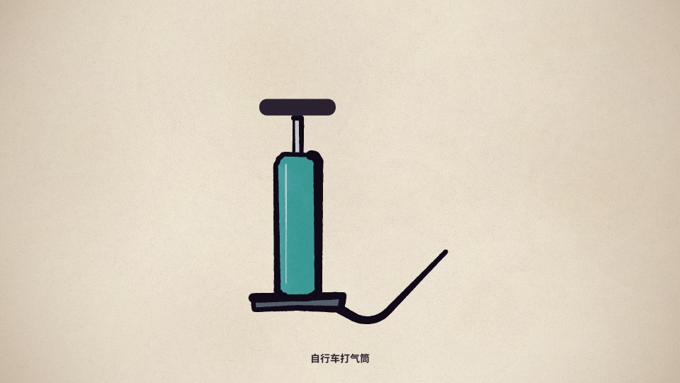
① 角色造型与接口
轮廓、比例、配色、坐标原点、尺寸单位、依赖与默认预览。
clawd(x, y, u, options)
researcher(x, y, s, options)共享主角 + 群演组合；另有 Sydney、Gato、Shoggoth、Basilisk、Chinchilla 客串。② 动作与表演参数
位置、手臂角度、表情、帽子、伸缩与持物挂点；说明单位和允许值。
move() / kf() / mood()
eyes / hat / aL / aR12 种动作调用名称；走到另一侧还需计算 x(t)。角度为弧度；手部道具还需绘图函数。③ 场景与道具
背景、前景、舞台、光照、布局、遮挡与角色接触关系。
stageBack / stageFront
meterProp / pumpProp现成共享组件含舞台、表盘、打气筒、聚光灯和放射背景；新按钮、灯泡可另写代码。④ 风格与创作说明
调色板、画笔、墨线、纸纹、动作节奏，以及分镜格式和输出规格。
PAL / paint / p5.brush
ANIMATION_GUIDE.md交付源文件、参数手册、运行样例和风格规范。新角色、新道具也可由 AI 或人扩充。复用时要读依赖：核心几何与画笔在 core.js，主角在 clawd.js，研究员在 cast.js，共享场景在 props.js；章节客串要保留对应章节与私有辅助函数。
03 原理：AI 怎样“驱动”？
驱动的具体形式，是写出按时间调用资产的动画程序。
故事 + 资产 + 风格
你提出目标、参考形象、内容和视频规格；模型读取资产接口。
输入：源文件、说明、新故事AI 编排分镜
安排角色做什么、持续多久、镜头如何移动、何时切换场景。
产物：带起止时间的分镜AI 编写动画脚本
把分镜落实成 x(t)、角度、表情、道具状态和镜头参数。
产物：可执行场景代码程序计算并画帧
renderAt(t) 计算当前画面，p5.js / p5.brush 绘画、上色与合成。
产物：连续图像 / 帧序列编码交付视频
Chrome 输出图像，FFmpeg 编码 MP4；需要声音时另行配置音轨。
交付：视频 + 源码 + 分镜画面怎样上色？角色与道具函数生成几何，paint() 按调色板与画笔规则铺色、画墨线；纸纹等由程序合成。
风格怎样统一？共用角色函数、调色板、笔刷和合成约定；换风格主要调整这些配置，改轮廓则需改造型代码。
AI 在哪里？AI 参与创作与修改脚本。渲染和播放执行已写好的代码，无需每帧请求模型；人负责审看故事与效果。
验收回路 ↺ 先渲染关键时点 → 检查动作、接触、遮挡与节奏 → 修改分镜或参数 → 重绘 → 通过后连续出帧与编码。
04 把一个故事拆成可执行的动作
实际样例：角色发现按钮，走近并按下，灯亮后举手庆祝。
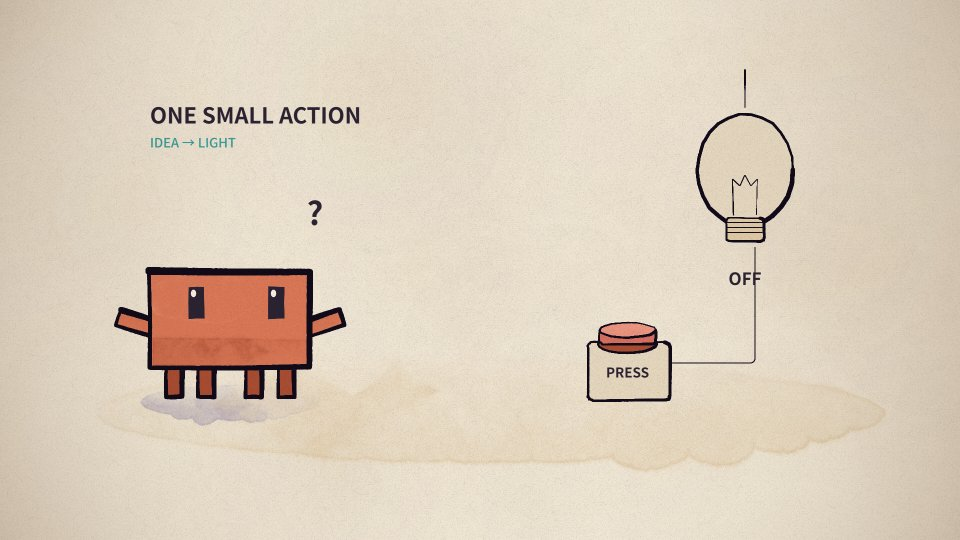
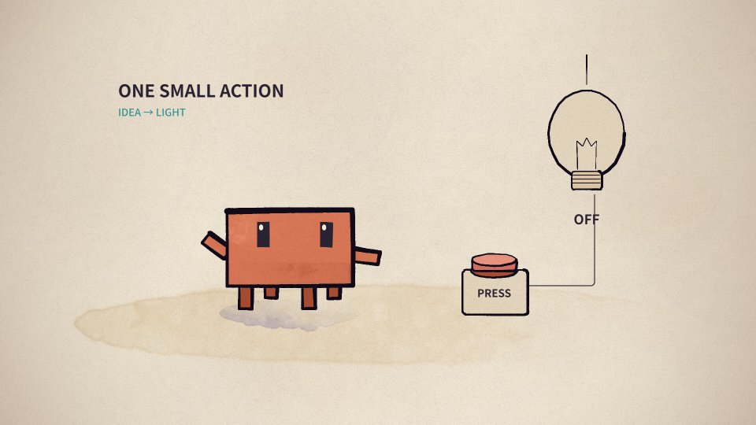
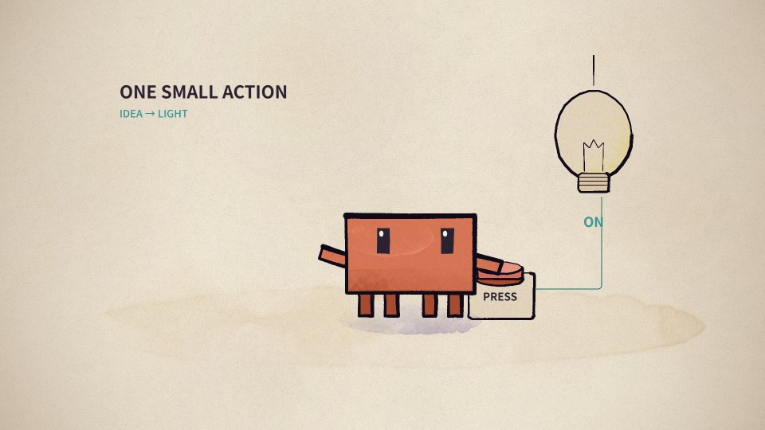
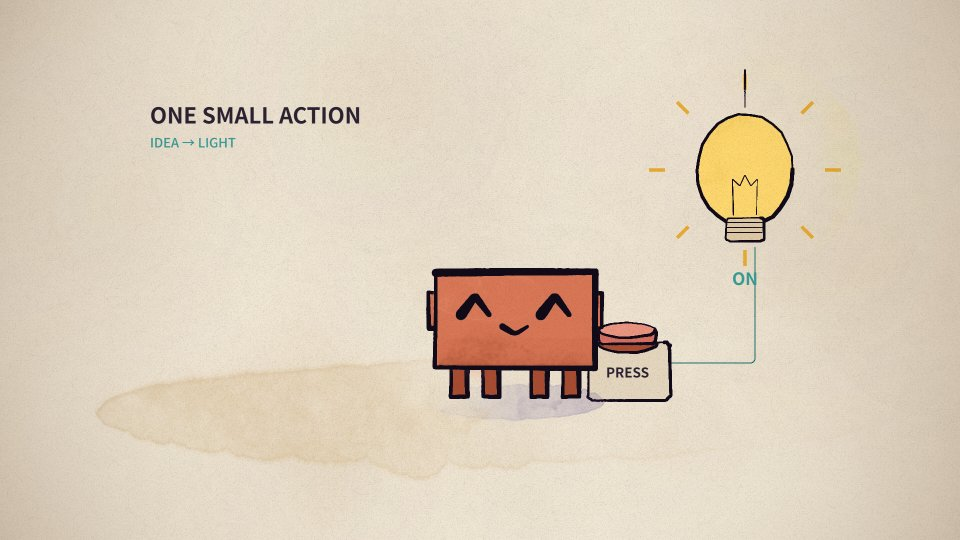
// 实际场景代码摘录：位置与状态由时间决定
x: kf(t, [[0,460], [.8,460], [2.4,1030], [6,1030]])
on: t >= 3.25
// 完整姿态传给 clawd()，按钮与灯泡由道具函数绘制。6 秒 × 12 FPS = 72 帧
每帧计算这个时刻的参数，再绘制并合成。帧序列经过 FFmpeg，得到真实可播放的六秒视频。原始角色不变，新故事由新场景代码编排。
05 适合哪些使用场景？
适合能明确描述造型、动作和时间的二维内容。
品牌角色与产品介绍
固定角色做欢迎、操作演示、产品说明和短故事；积累品牌配色、动作与道具。
需要：角色规范、文案、分镜与验收教学与概念讲解
用图形、人物和道具解释步骤、因果、算法或抽象概念，并对齐旁白时间。
需要：知识核对、可读图示、讲解节奏音乐 MV 与歌词动画
按歌词与节拍编排舞蹈、镜头、字幕和转场，用固定角色保持整片视觉一致。
需要：歌词时间、BPM、音乐与新分镜系列内容与参数模板
复用角色、场景和风格，换故事、文案、颜色或数据；逐步形成系列短片模板。
需要：可变参数、批量入口与质量检查06 对你的意义是什么？
把创作需求变成能积累、能修改、能重复使用的动画流程。
建立角色、道具、表情、动作与风格库；后续作品继续使用同一套造型。
给清楚的故事与接口，让 AI 写分镜和动画程序；你通过预览提出具体修改。
能指定何时走到哪里、手抬多少、何时亮灯、用什么颜色，并检查对应代码。
同时保留分镜、源代码、实际帧和 MP4；便于修改、复用及制作下一集。
你可以先做：一个自己的角色 + 按钮和灯泡 + 六秒短片 → 看静帧 → 改动作和配色 → 出片 → 再积累新场景与道具。制作效率的改善要用你自己的样例实测。
采用时要理解的边界
PDoomVideo 是固定 MV 的作品源码，提供可借鉴的组件与流程。制作新内容需要写新分镜和场景代码；通用自然语言入口、自动听歌与业务批量生产还需开发。
准备、渲染与检查仍需投入
造型改动需要写代码；复杂水彩逐帧绘制需要等待。本机原作六帧样本约 4.85–13.14 秒 / 帧，不能当作所有镜头的速度；先静帧、再短片。